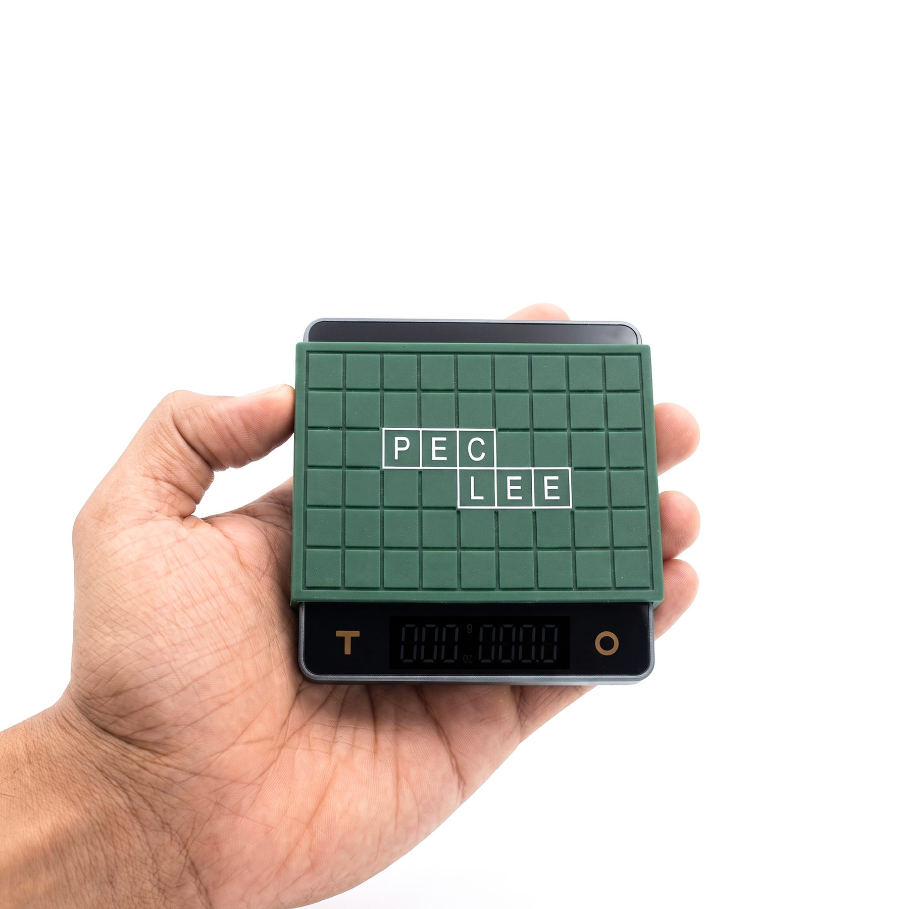

PESO or PESOmini?
Both coffee scales display weight in 0.1 g increments. The useful difference is physical: how much room you have under the espresso spouts, and how heavy your brewer gets when it is full.


The measurements
| Measurement | PESO | PESOmini |
|---|---|---|
| Length × width × height | 130 × 124 × 23.5 mm | 90 × 85 × 12 mm |
| Weighing range | 0.2–2000 g | 0.2–1500 g |
| Resolution | 0.1 g | 0.1 g |
| Weight | 340 g | 160 g |
Will it fit under your espresso spouts?
Measure the usable flat area of the drip tray first. The PESOmini needs a 90 × 85 mm footprint; PESO needs 130 × 124 mm. Then measure from the tray to the lowest spout and subtract the height of your cup. That space has to accommodate the scale and still let you slide the cup out. At 12 mm high, PESOmini leaves 11.5 mm more room than PESO.
How much does a pour-over really weigh?
Count everything the scale carries: server, dripper, filter, dry coffee and water. For example, a setup weighing 850 g before the pour reaches 1,550 g with 700 g of water on the scale. That is within the 2,000 g PESO limit and above the 1,500 g PESOmini limit. Pressing tare resets the displayed reading; the brewer still counts towards the load.
For a travel kit
PESOmini weighs 160 g and takes up less space in the bag. If you brew on a small tray, trace its footprint on paper and try it with your usual cup before deciding.
Buying in Saudi Arabia? Each product page links to its listing on Noon Saudi Arabia.